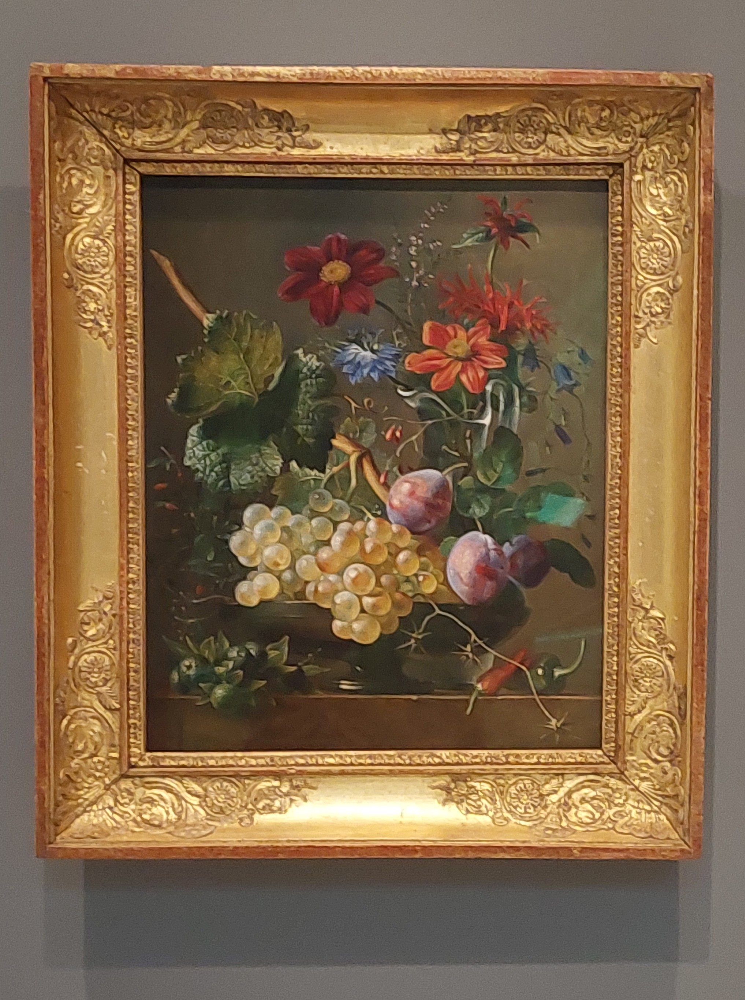

<section id="about" style="background-color: #fff; padding: 2rem; max-width: 1000px; margin: auto;">
    <style>
        .about-container {
            display: flex;
            flex-direction: row;
            gap: 2rem;
            align-items: flex-start;
            flex-wrap: wrap;
        }

        .profile-pic {
            width: 110px;
            height: 180px;
            border-radius: 10%;
            object-fit: cover;
            #border: 4px solid #883158;
            flex-shrink: 0;
        }

        .cv-link {
            color: #883158;
        }

        .smalltext {
            font-size: .75rem;
        }

        .info-column {
            flex: 1;
            display: flex;
            flex-direction: column;
            gap: 1.5rem;
        }

        @media (max-width: 768px) {
            .about-container {
                flex-direction: column;
                align-items: center;
                text-align: center;
            }

            .info-column {
                align-items: start;
                text-align: left;
            }
        }

        section h2 {
            font-size: 1rem;
            margin-bottom: 0.5rem;
            color: #883158;
        }

        section ul {
            padding-left: 1.25rem;
        }

        section {
            background-color: #f9f9f9;
            padding: 1rem;
            border-radius: 8px;
        }
        p {
            margin-bottom: 1rem;  /* ou 16px */
        }

    </style>


    <div class="about-container">
        <div class="profile-column">
        
            <p class="smalltext"> de Comoléra, M. (1827)<br> <i>Still Life with Grapes and Flowers.</i><br> Art Institute, Chicago.
            </p>
        </div>

        <div class="info-column">
            <section id="teaching">
                <h2>Teaching</h2>
                <ul>
                    <li>W2026. ACTSC-431: Casualty and Health Insurance Mathematics 2. University of Waterloo. </li>
                </ul>
            </section>

            <section id="ta">
                <h2>TAship</h2>
                <ul>
                    <li>F2025. ACTSC-614: Corporate Finance and Accounting. University of Waterloo. </li>
                    <li>F2025. ACTSC-611: Financial Mathematics 1. University of Waterloo. </li>
                    <li>W2025. ACTSC-625: Casualty and Health Insurance Mathematics. University of Waterloo. </li>
                    <li>W2025. ACTSC-624: Stochastic Processes for Actuarial Science. University of Waterloo. </li>
                    <li>F2024. ACTSC-231: Introductory Financial Mathemathics. University of Waterloo. </li>
                    <li>F2024. MTHEL-131: Introduction to Actuarial Practice. University of Waterloo. </li>
                    <li>F2023. ACT-3000: Risk Theory. Université Laval. </li>
                    <li>F2022. ACT-3000: Risk Theory. Université Laval. </li>
                    <li>W2022. ACT-2001: Introduction to Actuarial Science 2. Université Laval. </li>
                    <li>F2021. ACT-2005: Non-Life Mathematics 1. Université Laval. </li>
                    <li>F2021. ACT-1003: Complements of Mathematics. Université Laval. </li>
                    <li>F2020. ACT-1003: Complements of Mathematics. Université Laval. </li>
                </ul>
            </section>
        </div>
    </div>
</section>
